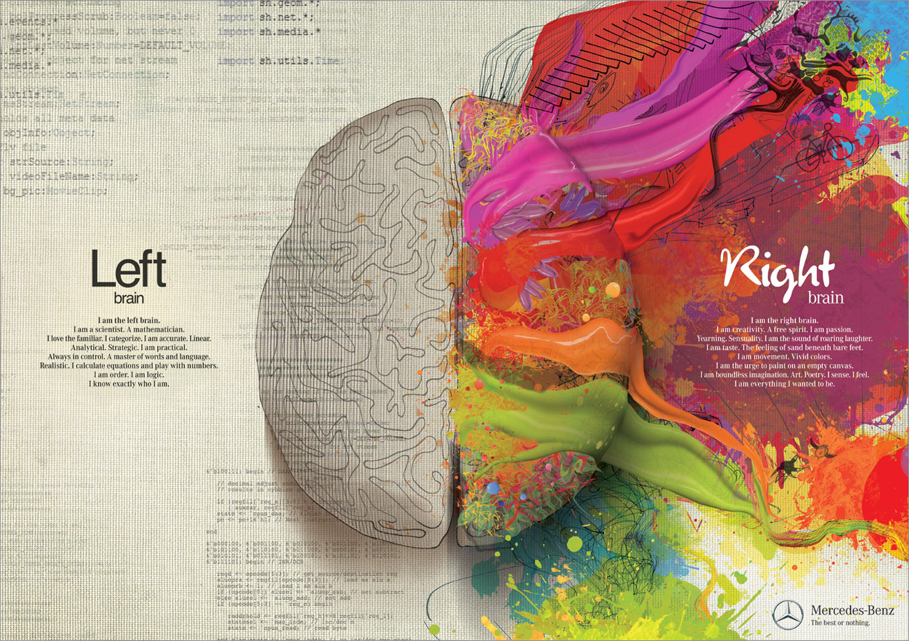
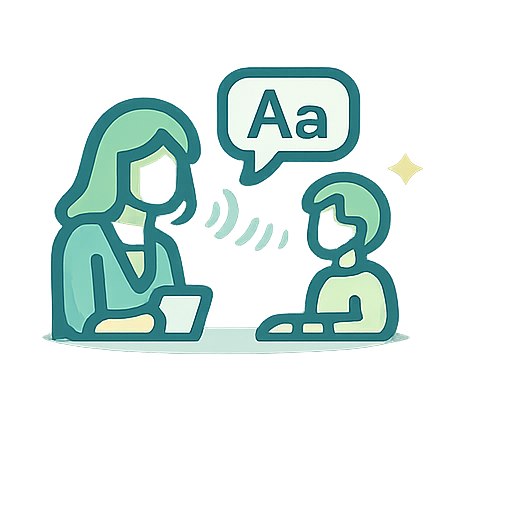
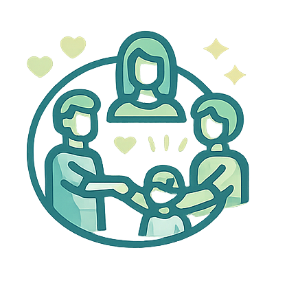

Trustworthy speech language pathology services that helps each patient communicate with confidence and live more fully.
About
After earning my Master's degree from North Carolina Central University in 2013, I have provided speech-language pathology services across diverse rehabilitation settings in North Carolina, Washington, and California. My clinical experience spans hospitals, skilled nursing facilities, assisted living communities, home health, and telepractice, with a primary focus on adult and geriatric populations presenting with a wide range of medical diagnoses.
I have had the privilege of supervising and mentoring seven speech-language pathologists during their Clinical Fellowship Year (CFY), supporting their transition into independent practice.
As one of the first multilingual speech-language pathologists to share clinical expertise on Zhihu.com and through podcasting, I collaborated with allied professionals in sharing firsthand clinical insights and professional perspectives, becoming an influential voice in this emerging field within Chinese-speaking communities. I am passionate about connecting Chinese-speaking SLPs and interdisciplinary professionals worldwide to better serve multilingual individuals with special needs and their families.
Outside of work, my life rotates around my two energetic sons. I also find peace in cooking, playing video games, and spending time with friends and family.
Certifications
- CCC-SLP
- CA State License
- FEES Certificate
- Lee Silverman Voice Treatment-LOUD Certificate
- E-swallow NMES Certificate
- Advanced Telehealth Coordinator Certificate - University of Delaware
- BLS Certificate
Services
In-Person Session
Customized 1:1 treatment aligned to each patient's daily life and goals.

Person-centered Treatment
Support for speech, language, voice, cognition, and swallowing with Evidence-based Practice

Family Coaching
Clear caregiver guidance to extend progress beyond each therapy session.
Teletherapy
Structured online sessions with the same clinical rigor as in-person care.
Let's Connect
What source of payment do you accept?
All consults and services are private-pay only at this time. Superbills are available upon request.
Who is this service for?
Adults with difficulty in communication, cognition, voice, and swallowing function, and families needing guidance and support.
- Aphasia
- Acquired Apraxia of Speech
- Dysphagia
- Dementia, Mild Cognitive Impairment (MCI), and other cognitive disorders
- Voice Disorders
How long are the therapy sessions?
Session lengths are tailored to each client and usually range from 30 minutes to 1 hour.
Where will therapy take place?
In-person service covers most of South Bay Area and nearby cities, delivered in clients' homes and community settings. Teletherapy is available anywhere in California via Zoom.